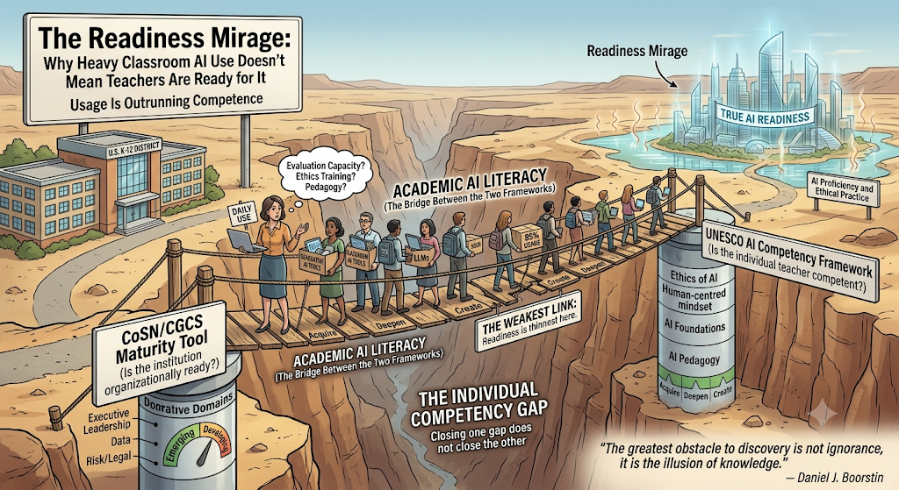

The Readiness Mirage:
Why Heavy Classroom AI Use Doesn't Mean Teachers Are Ready for It
Reading the CoSN/CGCS Maturity Tool and UNESCO's AI CFT side by side reveals that U.S. K-12 is facing a nested readiness gap — and the weakest link sits where the two frameworks meet.

“The greatest obstacle to discovery is not ignorance, it is the illusion of knowledge.”
— Daniel J. BoorstinAsk a U.S. school district whether it's ready for AI, and odds are good you'll get a confident yes. 85% of teachers now report some classroom AI use, up from a small minority just three years ago.1 Ask whether the district's teachers are actually competent to use it well, and the honest answer is far less confident, and far less measured. Two different frameworks exist to answer these two different questions. One scores the institution, one scores the individual. Reading them side by side shows that U.S. K-12 isn't facing one readiness gap. It's facing two, nested inside each other, with the weakest link sitting exactly where the two frameworks meet.
Two Questions, Not One
The CoSN/CGCS Gen AI Maturity Tool and UNESCO's AI Competency Framework for Teachers (AI CFT) sound like they measure the same thing. They don't. CoSN asks whether the district, as an institution, is organizationally ready to support AI. CoSN scores seven domains, from Executive Leadership and Data to Risk/Legal, as emerging, developing, or mature.2 UNESCO asks whether the individual teacher inside that institution is actually competent to use AI, scoring five dimensions, from Human-centred mindset to AI pedagogy, as Acquire, Deepen, or Create.3
Used alone, either framework tends to conflate two genuinely different failure modes: an institution that isn't supporting its people, and an individual who isn't yet competent despite institutional support. Treat readiness as one question and you'll misdiagnose half of what you find. Treat it as two, and a more precise picture appears, one made more urgent by how recent this whole area of measurement is: since 2022, only seven countries had built any AI framework for teachers at all.3
What "Ready" Actually Requires
UNESCO's three levels aren't just labels; they describe genuinely different capabilities. At Acquire, a teacher has the essential competencies to evaluate, select, and appropriately use AI tools. At Deepen, the level UNESCO treats as full competence, a teacher designs pedagogical strategies and materials that integrate AI into the classroom, with human-centred, ethically sound practice. At Create, a teacher is driving curriculum innovation and systemic change. Stacked together, fifteen competencies across five dimensions and three levels yield forty-five distinct assessment criteria, a genuinely fine-grained yardstick.
The trouble is that the yardstick is more developed than anyone's ability to use it. Teacher AI competence is new enough as a field of study that well-recognized measurement instruments barely exist, particularly in K-12; scales built specifically to operationalize UNESCO's framework, like TAICS, were only recently created.4 The destination is mapped in detail. The instrument for finding out where any given teacher currently stands on that map is still being built.
The Bridge Between the Two Frameworks
CoSN's domains and UNESCO's dimensions aren't parallel lists measuring the same thing from different angles. They're enabler and outcome. Each individual competency a teacher needs depends on one or more organizational domains being mature enough to actually produce it.
| UNESCO Dimension (Individual) | Enabling CoSN Domain(s) | Best U.S. Proxy Indicator | Inferred Typical Level |
|---|---|---|---|
| Human-centred mindset | Executive Leadership; Risk/Legal | Leaders far less concerned about critical-thinking harm than parents (22% vs. 61%) | Acquire (partial) |
| Ethics of AI | Data; Security; Risk/Legal | ~22% of teachers trained on AI-specific risks | Below Acquire for most |
| AI foundations & applications | Technical; Operational; Academic AI Literacy | ~53% instructional use, ~85% any use, but knowledge widely "fragmented" | Acquire behaviorally, shallow underneath |
| AI pedagogy | Academic AI Literacy (primary) | Districts sequencing proficiency before student integration | Pre-Deepen |
| AI for professional learning | Academic AI Literacy; Executive Leadership | About half received any training; 43% had ≥1 session by fall 2024 | Acquire (partial) |
The crosswalk's central insight sits in one row: Academic AI Literacy, added to the CoSN model in November 2024 specifically to assess how prepared educators are to integrate AI5, is the load-bearing bridge between the two frameworks. It's the one organizational domain whose explicit job is to manufacture individual competency. It's also the domain districts feel least mature on: in CoSN's 2025 member survey, only 10% considered themselves well prepared with ongoing AI-literacy support.6 High usage and low competence can coexist for a long time when the bridge connecting them is this thin.
Usage Is Outrunning Competence
Read the adoption numbers on their own, and U.S. K-12 looks like it's moving fast in the right direction. The share of teachers using generative AI for work doubled, from 25% to 53%, between 2023–24 and 2024–25, and 85% reported some classroom use in 2024–25, up from just 18% as recently as fall 2023.1 Read the same numbers through UNESCO's lens, and the story changes. Acquire isn't about frequency of use; it's about the capacity to evaluate, select, and use a tool appropriately. The peer-reviewed literature on educator AI knowledge backs up the distinction, describing that knowledge as frequently fragmented or superficial in ways that limit confidence and sustained use rather than reflect genuine mastery of it.8 A teacher using AI daily without that evaluative capacity hasn't achieved Acquire. They're ahead of acquiring it, behaving, in framework terms, like they're already at Deepen while resourced like they're still at Acquire, and unevenly so. In other words, they're using AI more confidently than competently.
Where the Individual Gap Runs Deepest
Broken out by UNESCO's five dimensions, the gap concentrates hard in two places. Ethics of AI is the thinnest: only about 22% of 6th–12th grade teachers report any training on AI's risks, such as inaccuracy or bias1, leaving most teachers below Acquire on the dimension UNESCO treats as the framework's ethical backbone. AI pedagogy, the Deepen threshold, is barely reached at scale, because districts are deliberately sequencing educator proficiency ahead of integrating AI into student learning experiences; designing AI-integrated instruction is, by districts' own admission, a later stage they haven't arrived at yet.10 Professional learning is thinner than the headline numbers suggest, too: seven in ten teachers reported no AI training as of spring 2024, rising to 43% with at least one session by fall 20249, and a single session rarely builds the sustained, reflective practice the dimension actually requires. Even the leadership layer shows a quiet version of the same gap: 61% of parents, against just 22% of district leaders, agreed that greater AI use could harm students' critical-thinking skills7, a divergence suggesting the human-centred caution UNESCO asks for hasn't been internalized evenly between the people making the decisions and the people living with them.
Where the Gaps Concentrate
Neither gap is distributed evenly, and they don't fail independently; they stack in the same schools. District training of teachers on AI more than doubled, from 23% to 48%, between 2023 and 2024, but low-poverty districts far outpaced high-poverty ones, 67% to 39%10, a divide RAND projects will persist rather than close on its own. Because the organizational domains that are supposed to produce individual competency are weaker in high-poverty districts to begin with, the UNESCO competencies they're meant to generate will be correspondingly weaker there too. The two gaps don't just coexist. In the schools that can least afford it, they compound.
Is 85% Adoption the Same as Readiness?
A natural objection to all of this is that 85% adoption already is readiness; if teachers are using the tools, doesn't that demonstrate they can? UNESCO's own definitions are the clearest rebuttal: Acquire requires evaluative, appropriate use, and the peer-reviewed finding that educator AI knowledge is widely fragmented suggests much of that 85% isn't evaluative at all.8 Usage demonstrates access and willingness. It doesn't demonstrate competence. Treating the two as interchangeable is the exact measurement error this crosswalk exists to correct.
The same divergence between apparent activity and actual readiness appears on the student side of the ledger. In RaiseMark’s research briefing, Two-Thirds of App-Store AI Tools Market to Schools, but Fewer Than 3% Protect Student Data, an analysis of 1,455 tools revealed that 21.4% operate exclusively through mobile app stores without a website, bypassing district procurement, monitoring, and compliance filters entirely.
A second, more reassuring-sounding tension dissolves the same way once the two frameworks are kept separate. Training rates climbing from 48% toward a projected 74%9 read as organizational progress, while UNESCO-lens indicators—22% trained on ethics, pedagogy still pre-Deepen—read as individual stagnation. These aren't contradictory findings competing for the same conclusion; they're two different scoreboards. A district can legitimately advance from emerging to developing on CoSN by simply offering more training, while the teachers it serves remain stuck at Acquire, because offering training and building competence are not the same accomplishment.
One real limitation deserves stating plainly. Neither framework is an empirically validated, U.S.-normed measurement instrument. UNESCO's framework is global, and has been characterized in peer-reviewed commentary as still in an early, draft rollout phase8; CoSN is U.S.-built but vendor-supported. Both are authoritative as structures, clearly specified, widely adopted as references, and neither should yet be treated as a calibrated scale. That's the honest reason every competency-level placement in this piece is a reasoned inference, not a measured score.
What This Means for Audits
Put the two frameworks together and the right question changes, from "how big is the gap?" to "which gap, and at which level?" Organizationally, most U.S. districts are early-stage but moving. Individually, most teachers are using AI well ahead of the competence that use implies, with ethics and AI-integrated pedagogy the clearest deficits. The two frameworks meet at exactly one point, CoSN's Academic AI Literacy domain, the institution's actual mechanism for manufacturing individual competence, and that's precisely where readiness is thinnest. That's not a coincidence. It's the explanation for why adoption has managed to outrun both axes at once.
Three things follow for anyone running an audit, rather than just reading about one — which is why RaiseMark's AI 360 Review evaluates both institutional infrastructure and classroom competency under our structured Methodology:
- Score the two axes separately, and report the distance between them. A "developing" district can still be staffed almost entirely by "Acquire"-level teachers. Folding both into a single readiness number hides the exact gap that matters most.
- Target the bridge, not generic training. Academic AI Literacy and AI for professional learning are where organizational support is supposed to become individual competence. A one-off training session shows up as progress on a checklist without producing the thing the checklist is actually trying to measure.
- Weight ethics and pedagogy more heavily than usage. Usage is already high and still climbing on its own. It isn't where the real gap lives. Ethics and AI-integrated pedagogy are where the individual competency deficit is widest, and where an audit's attention is most needed.
None of this is fully resolved, and it shouldn't pretend to be. There's no nationally representative scoring of U.S. teachers against UNESCO's levels yet, and no public distribution of districts across CoSN's either, so for now, the size of each gap is estimated, not known. That isn't a weakness in this analysis. It's the strongest argument for building the instrument that would finally know it.
Explore related briefings on school AI governance, shadow infrastructure, and verification:
- Two-Thirds of App-Store AI Tools Market to Schools, but Fewer Than 3% Protect Student Data — Analysis of 1,455 tools operating in shadow app stores without district oversight.
- The Trouble With AI's Confidence Scores — Why asking models how sure they are fails without calibrated prompt design.
- AI 360 Review — Comprehensive diagnostic audit evaluating organizational maturity, tool telemetry, and classroom usage.
Notes & Sources
- Center for Democracy & Technology national survey data, reported via GovTech and EdWeek; classroom AI use (85%, up from 18% in fall 2023), teacher training rates, and the 22% of teachers trained specifically on AI-related risks such as bias and inaccuracy. govtech.com; edweek.org
- CoSN/CGCS, K-12 Generative AI Maturity Tool: seven organizational domains scored emerging, developing, or mature. Framework purpose and domains also confirmed by the Wisconsin Department of Public Instruction's official AI guidance. cosn.org
- UNESCO, AI Competency Framework for Teachers: five dimensions, fifteen competencies, three progression levels (Acquire, Deepen, Create). Official framework documentation. unesco.org
- International Journal of Educational Technology in Higher Education (Springer), validation study for the TAICS teacher AI self-efficacy scale, grounded in UNESCO's framework and TPACK; cited for the current immaturity of teacher-AI-competence measurement instruments. link.springer.com
- CoSN/CGCS, addition of the Academic AI Literacy domain to the Maturity Tool, November 2024. cgcs.org
- CoSN, 2025 Operational AI in Education Member Survey (n≈281); 10% of respondents reported feeling well prepared with ongoing AI-literacy support. cosn.org
- RAND Corporation, RR-A134-25 and RR-A4180-1, nationally representative teacher surveys, 2023–24 and 2024–25; usage growth and the leader/parent perception gap on critical-thinking risk. rand.org
- Peer-reviewed journal article (PMC), fragmented AI knowledge among general and special education teachers, and the gap between awareness and competence. pmc.ncbi.nlm.nih.gov
- EdWeek Research Center, teacher AI training rates, spring and fall 2024, with a 74% projection. edweek.org
- K-12 Dive, reporting RAND district-panel data, training-rate growth (23% to 48%) and the poverty-based disparity (67% vs. 39%). k12dive.com